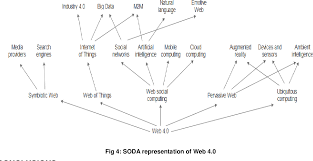

Web 4.0 is the next evolution of the web, focusing on intelligent, connected, and autonomous systems.
Uses AI, IoT, and real-time data to create highly interactive experiences.
Smart homes and voice assistants.
Represents the future of digital interaction.